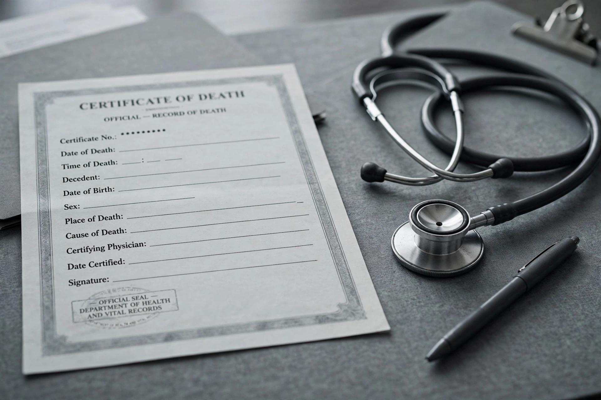

Cause of deathIn law, medicine and statistics, a cause of death is an official determination of the conditions or circumstances that result in the death of a human being, recorded on a death certificate. Causes are classified using the World Health Organization's International Classification of Diseases (ICD).
A certifying physician, coroner or medical examiner states the chain of conditions leading to death: the immediate cause, intermediate causes, and the underlying cause that initiated the sequence, plus contributing conditions. Forensic pathology distinguishes cause (the disease or injury, e.g. gunshot wound), manner of death (natural, accident, suicide, homicide, undetermined) and mechanism (the physiological derangement, e.g. haemorrhage).
Globally, the leading causes of death per WHO data are cardiovascular diseases (especially ischaemic heart disease and stroke), respiratory infections and chronic respiratory diseases, and cancers. Historically infectious diseases dominated; the epidemiological transition shifted the burden to non-communicable diseases as populations aged. Accuracy of certification varies widely and "garbage codes" such as cardiac arrest describe mechanisms rather than true underlying causes.
Cause of death matters for criminal law (homicide), insurance, inheritance and public health surveillance.